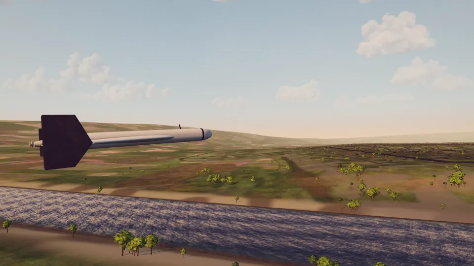

Тема
ОшибкаАккаунт и прогрессПокупкиЖалоба на игрокаИдея
После второй волны на «Речном узле» пропал звук ракет - вернулся только после перезапуска игры. Повторилось два раза.

снимок · 410 КБ▶ видео.mp4
14,2 МБ
+ Файл
фото / видео
До 3 файлов, каждый до 20 МБ · видео по мобильной сети тратит трафик
Приложится само
Версия 20261117d
Устройство iPhone · Safari
Графика Высокая · 60 к/с
Бой Оборона · Речной узел
Ошибки страницы нет
✓Снимок экрана боя
Отправить